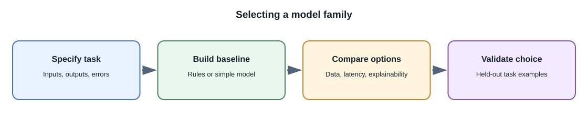
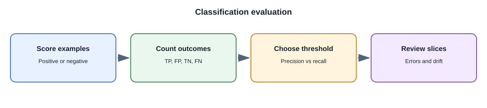

Machine Learning and Deep Learning¶
Introduction¶
Machine learning includes methods that learn patterns from data. Deep learning is a branch of machine learning based on neural networks with multiple learned layers. Modern language, image, speech, and multimodal models often use deep learning, but many valuable prediction tasks use simpler methods.
Why are there different methods?¶
Different tasks have different data sizes, shapes, risks, and latency requirements. A small decision tree can be easier to inspect for a structured business rule. A neural network can learn useful representations from large amounts of text or images. The most complex model is not automatically the best system.
A practical comparison¶
| Method family | Typical inputs | Example task | Strengths and limits |
|---|---|---|---|
| Rules and heuristics | Explicit conditions | Reject an expired session | Predictable and easy to explain; brittle when cases multiply |
| Linear models | Structured numeric or encoded features | Estimate churn probability | Fast and often interpretable; limited nonlinear relationships |
| Decision trees and ensembles | Structured tabular features | Rank applications for manual review | Strong on tabular data; care is needed with bias and explanations |
| Clustering | Feature vectors without labels | Group similar products | Finds structure; groups may not match useful business categories |
| Neural networks | Text, images, audio, and other representations | Transcribe speech or classify an image | Learns rich patterns; needs suitable data, compute, and evaluation |
| Foundation models | Broad pretraining across large datasets | Generate text, images, or code | Reusable across tasks; can be expensive, opaque, or unreliable for a specific task |
These descriptions are indicative, not rules. A neural network can also work with structured data, and a foundation model is itself a trained model family, not a guarantee of general intelligence.

For regression, a model predicts a numeric value such as delivery time. For classification, it predicts a label or class score such as ticket category. Clustering groups examples without known labels. A recommendation or ranking system orders candidate items for a user or context. A simple rule or linear model can be the right starting point when its behavior is easier to validate than a more complex model.
Training, validation, and test data¶
To estimate generalization, teams commonly separate examples into:
- Training set: data used to fit model parameters.
- Validation set: data used to compare configurations and tune decisions.
- Test set: held-back data used for a final estimate after choices are made.
The split must reflect how the model will be used. For time-dependent events, a chronological split may be more realistic than random shuffling. For user-level data, keep the same user's records from leaking across training and test sets when that would make evaluation misleading.
Overfitting happens when a model fits accidental details in its training data and performs poorly on new examples. Underfitting happens when the model is too limited or insufficiently trained to capture useful patterns. Evaluation data, regularization, and appropriate model capacity help identify these problems.
Metrics depend on the task¶
Accuracy alone can be misleading. If only 1 in 1,000 transactions is fraudulent, a model that always predicts "not fraud" has 99.9% accuracy but detects none of the fraud cases.
| Metric | What it summarizes | Example use |
|---|---|---|
| Precision | Of predicted positives, how many were positive? | Reduce false alerts |
| Recall | Of actual positives, how many were found? | Catch more cases needing review |
| F1 score | Harmonic balance of precision and recall | Compare a selected classification threshold |
| Mean absolute error | Average absolute numeric prediction error | Demand or delivery-time estimate |
| Calibration | Whether predicted probabilities match observed frequencies | Risk scores used for prioritization |
Choose metrics with stakeholders and examine errors by relevant groups and conditions. The cost of a false positive and a false negative may be very different.

For a binary classifier, a true positive is a positive case correctly found; a false positive is an incorrect alert; a true negative is a correctly rejected case; and a false negative is a missed positive. Changing a score threshold trades precision against recall. In a banking fraud-review workflow, the model can prioritize cases for a person to inspect; it should not be treated as an infallible decision or as a substitute for an appeal and compliance process.
How model parameters are learned¶
During training, a model produces predictions in a forward pass. A loss function compares those predictions with targets. Backpropagation computes gradients describing how parameters contributed to that loss, and an optimizer such as stochastic gradient descent uses those gradients to update parameters. Learning rate, batch size, model capacity, data quality, and objective all affect the result. A lower training loss alone does not prove that a model generalizes.
Data leakage and drift¶
Data leakage occurs when evaluation or training accidentally includes information that would not be available at prediction time, or when evaluation examples indirectly reveal their labels. It can make offline scores look excellent while production performance is poor.
Data drift means the distribution of incoming inputs changes. Concept drift means the relationship between inputs and the desired outcome changes. A deployed model needs monitoring and a plan for re-evaluation; it does not stay correct merely because its code has not changed.
Full-stack example¶
Suppose a support application predicts a ticket category. The API validates the submitted text, sends safe features to the model service, stores the prediction and model version, and routes low-confidence cases to a person. The user interface should explain the suggestion and support correction. The model should not be given private account data it does not need.
Developer perspective¶
Start with a baseline such as a rule or simple model and define a measurable target. Keep training and serving data pipelines explicit and versioned. Evaluate failure cases rather than only reporting one average score.
Common misconceptions¶
- Deep learning is not always more accurate than simpler methods for every dataset.
- A model score is not a certainty or an explanation.
- Randomly splitting data is not always a valid evaluation design.
- A high metric can result from data leakage or an unsuitable test set.